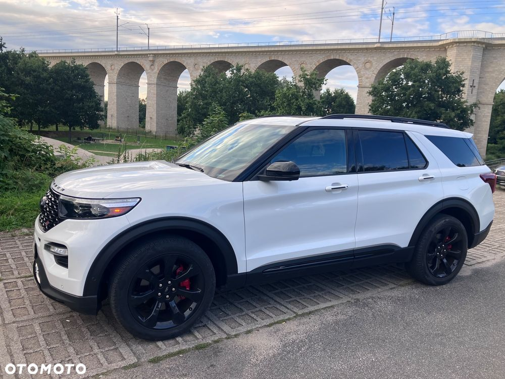
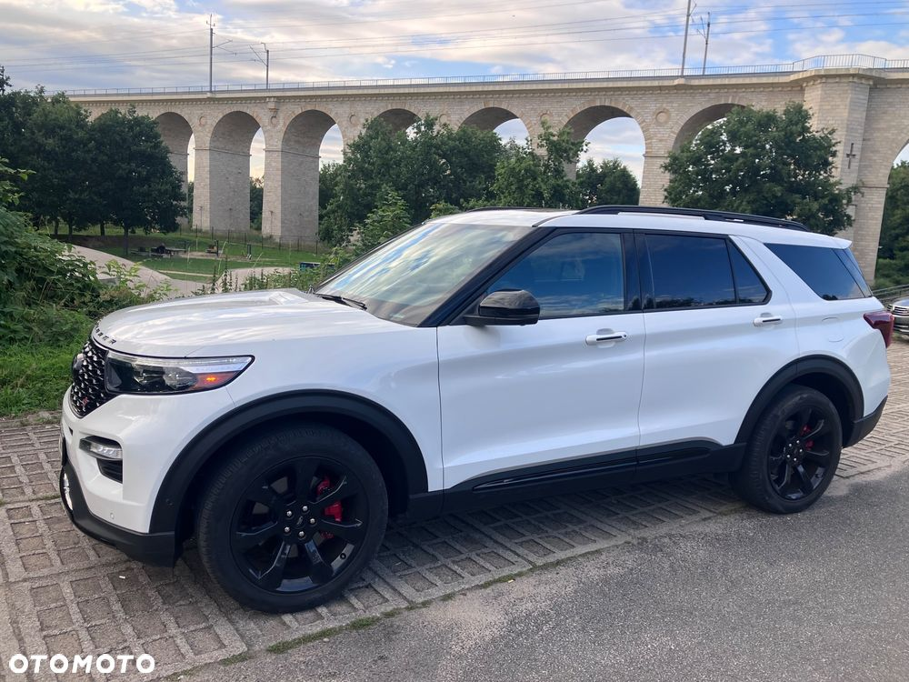
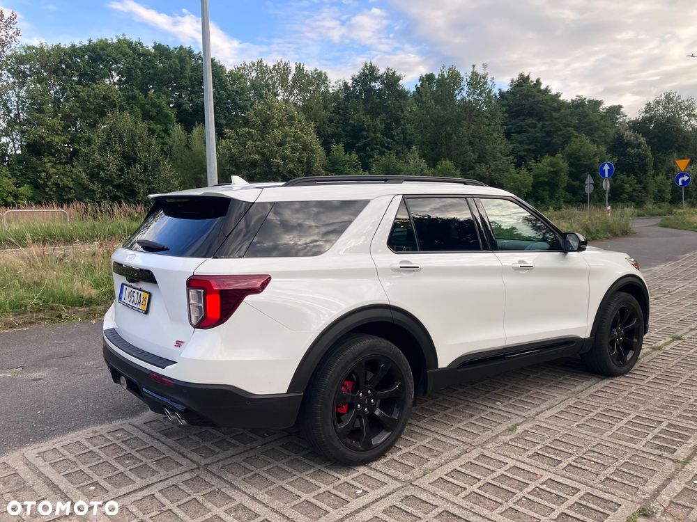
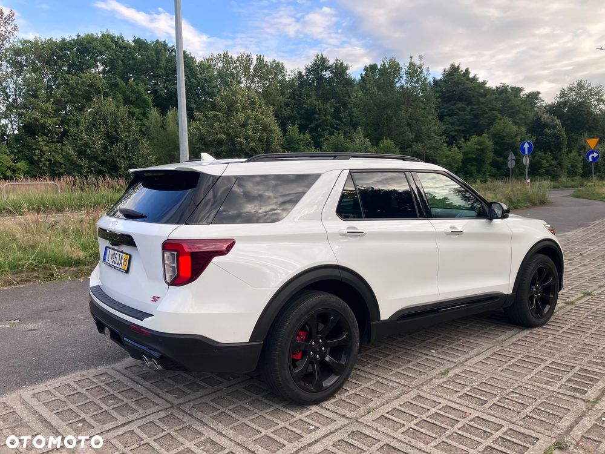
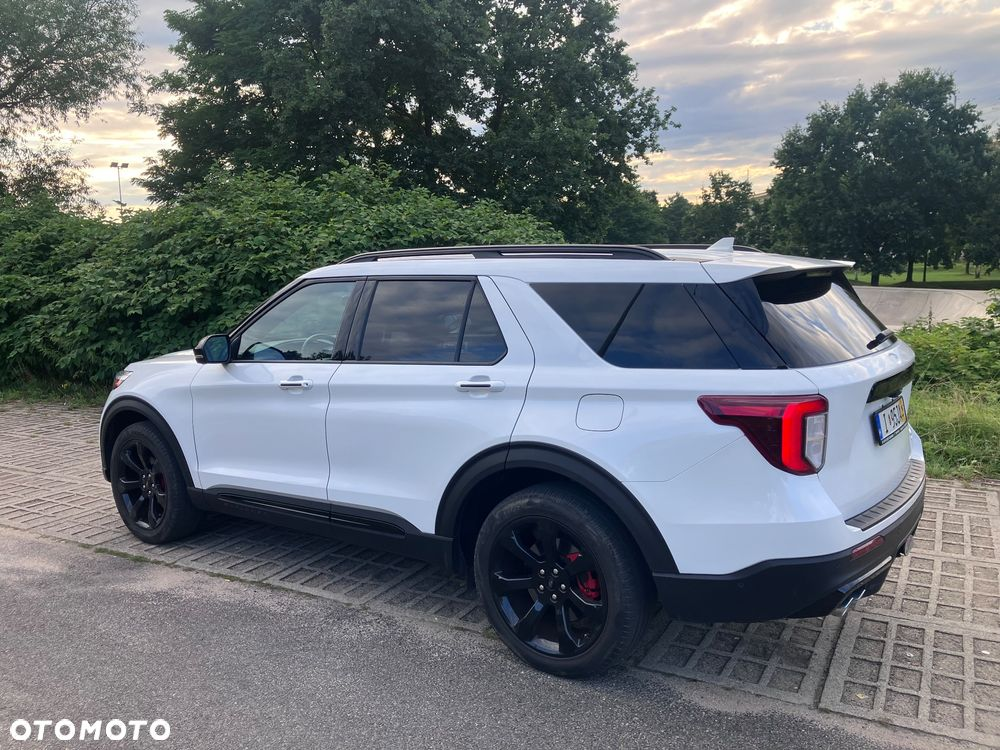
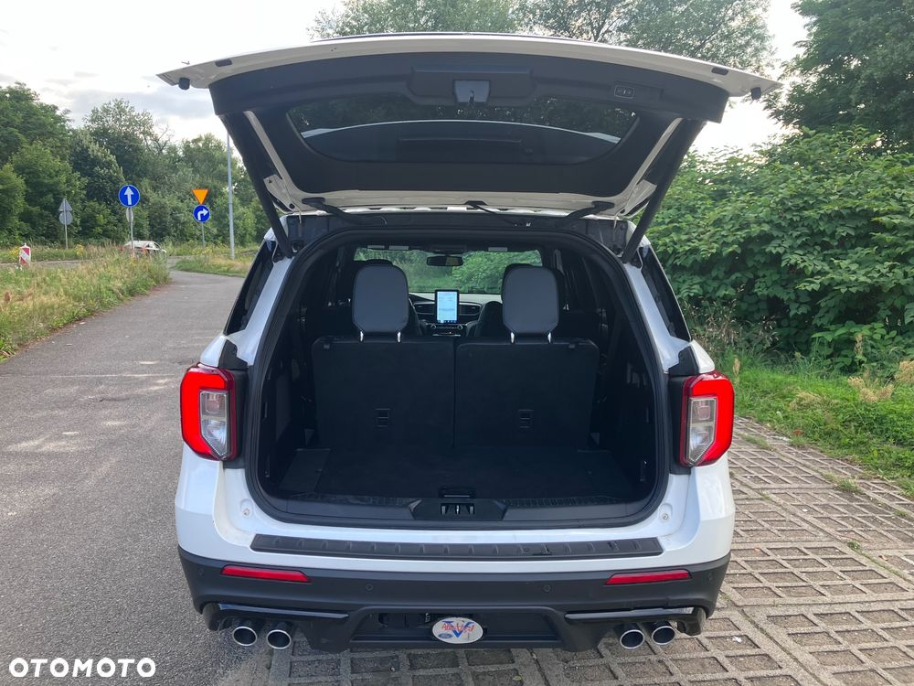
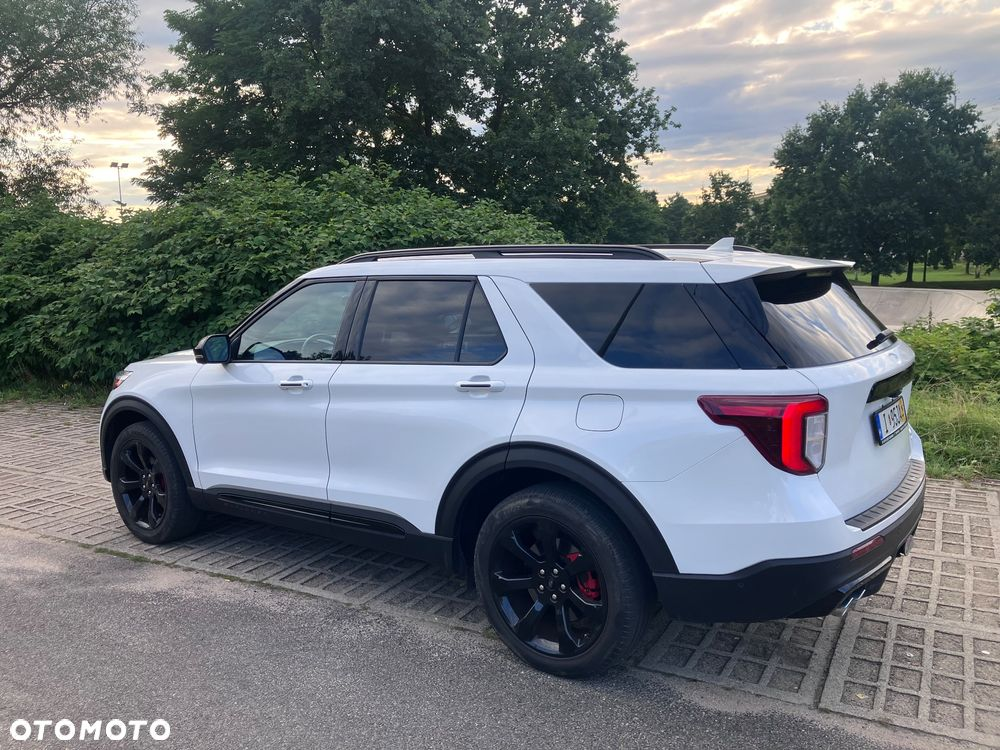
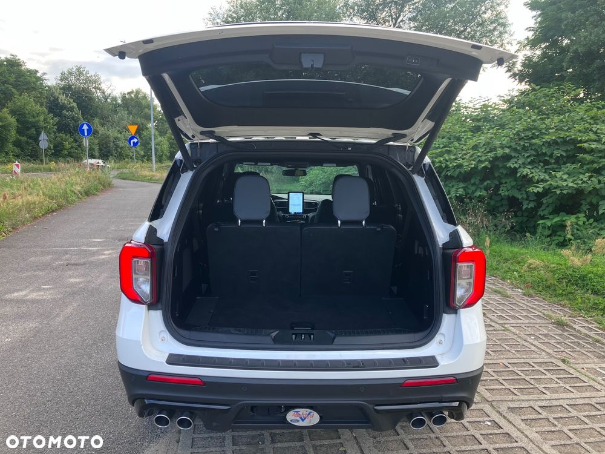
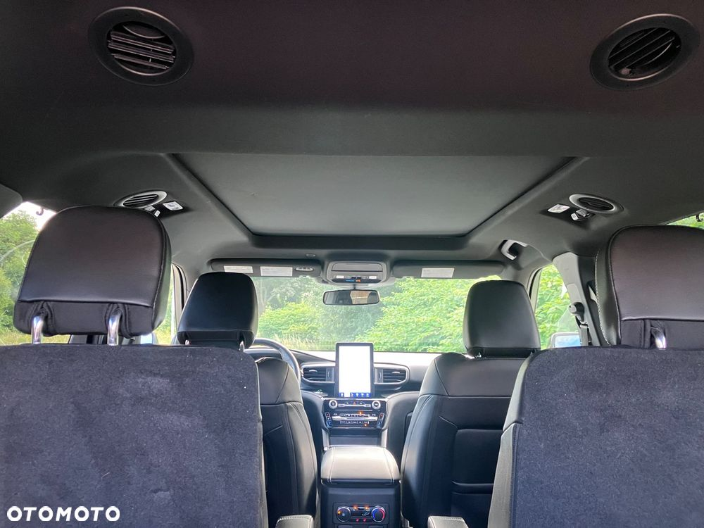
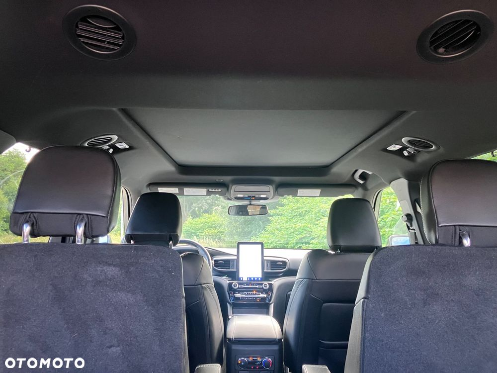

Auto w najnowszej wersji z tego roku 2021r. W środku jak nowy. Wersja z fotelami kapitańskimi czyli 3 rzędy po dwa fotele
Specjalny program do holowania przyczep oraz do zjazdu ze stromych gór . Bardzo ułatwia podróżowanie.
Dodatkowo programy sport, eko, piach, śnieg, normal.
Kamera z tyłu.
Czujniki parkowania
Asystent pasa ruchu
Aktywny tempomat
Czujniki martwego pola.
Masaże w fotelach przód
Auto bezwypadkowe.
Więcej informacji chętnie udzielę przez telefon.
 
 
 



 
